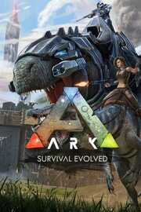

ARK: Survival Evolved
ARK: Survival Evolved
Details
|  | |
| Playtime | Not Played |
| Last Activity | Never |
| Added | 10/29/2021 1:31:49 |
| Modified | Never |
| Completion Status | Not Played |
| Library | Xbox |
| Source | Xbox Game Pass |
| Platform | PC (Windows) |
| Release Date | 12/19/2017 |
| Community Score | |
| Critic Score | |
| User Score | |
| Genre | |
| Developer | Studio Wildcard |
| Publisher | Studio Wildcard |
| Feature | |
| Links | |
| Tag | Game Pass |
Description
Stranded on the shores of a mysterious island, you must learn to survive. Use your cunning to kill or tame the primeval creatures roaming the land, and encounter other players to survive, dominate... and escape!
TAME, TRAIN, BREED & RIDE DINOSAURS, IN A LIVING ECOSYSTEM
Over 50 creatures can be tamed using a challenging subdue-&-protect process. Weaken a feral creature to knock it out, and then nursing it to health. Once tamed, you can issue commands to your Pet, which it may follow depending on how well you’ve tamed and trained it. Pets continue to level-up and consume food, and carry Inventory and Equipment. Fly a Pteranodon over the mountains, race through the jungle with a pack of Raptors, or chase down prey on a T-Rex! Experience a dynamic ecosystem with its own predator & prey hierarchies. Breed Pets through successive generations to generate the best traits. Or put more simply, breed & raise Dino Babies!
FOOD, WATER, TEMPERATURE AND WEATHER
Eat and drink to survive, with different foods having different nutritional values (including human meat!). All actions drain food and water, and long-distance travel is draining. Inventory weight slows you down, and the day/night cycle and weather alter the environment. Craft clothing, build shelter, and use fire to protect yourself against damage & the elements.
HARVEST, CRAFT, AND PAINT ITEMS
Harvest trees, ore, and more to become a master crafter. Use your hands, a Smithy, or a Fabricator to craft increasingly complex and powerful gear. Build a massive base using modular pieces--ranging from Thatch, to Wood, to Stone, to Metal. Customize your base by painting it and placing signs that you can actually draw on. Weapons, clothing, & armor gear can also be painted to express your own visual style.
SUMMON THE ULTIMATE LIFE FORMS
Bring rare items to special Summon locations to awaken the ARK’s mythical creatures, who arrive ready for battle. These monstrosities provide an end-game goal for the most experienced Tribes and their Pets, and yield valuable items if they are defeated.
RPG STATISTICS
Level-Up your survivor by gaining experience through in-game actions to learn new crafting Engrams, or find higher level item Blueprints in the most dangerous parts of the ARK. Customize the look of your character with a complex character creation system.
HARDCORE MECHANICS
Items have durability and wear out with use if not repaired. When you leave the game, your character remains “sleeping” in the persistent world. Your inventory also exists in the persistent world, vulnerable to theft. Death means permanent loss, and you can even enslave other players for your own purposes.
LARGE WORLD PERSISTENCE
On the 70+ player servers, your character, everything you built, and your pets stay in-game even when you leave. Special themed events will occur in the world with corresponding limited-run items!